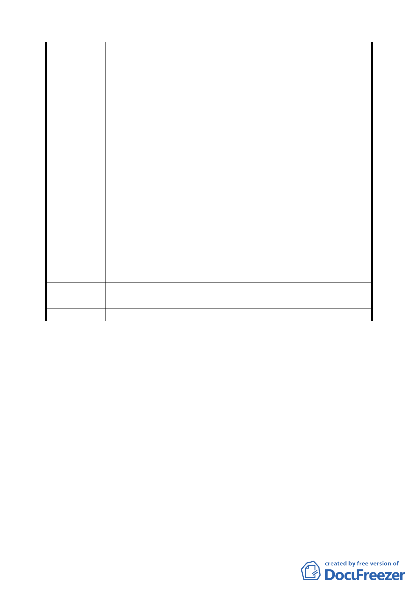

國家及經濟資源，無助於社區繁榮，又損害申請人之
權益，因此請求將本件 4 筆土地不列入上開都計案聯
合開發區。
（五）按土地聯合開發之目的，既在創造捷運工程局、土地
所有人及投資開發人利益共享，達到三贏之局面，自
應尊重土地所有人是否參與之意願。申請人所有之本
件 4 筆土地及本棟商業大樓，均屬依現有都市計畫法、
建築法等法律合法建造取得之私有財產權。憲法第 15
條明文規定，人民之生存權、工作權及財產權應予保
障。又行政行為如有多種同樣能達成的方法時，應選
擇對人民權益損害最少者，行政程序法第 7 條第 2 款
亦定有明文。因此，本件行政權力之行使，因強制使
人民之財產權、工作權發生重大變動，除合法外，允
宜謹慎自制，以免激發民怨、引起抗爭。
三、本件 4 筆土地不列入上開都計案參與聯合開發，亦不影
響新莊線捷運大橋國小站之施作及開發，但對申請人之
工作權及財產權卻有重大影響，且可避免國家社會寶貴
資源之浪費，因此請求將本件 4 筆土地不列入上開都計
案聯合開發區，而仍維持原用途。
建議辦法
請求將本件 4 筆土地不列入上開都計案聯合開發區，而仍維
持原用途。
委員會決議 同編號 1。
討論事項三
案名：變更臺北市內湖區西湖段 1 小段 256、272、276 等 3 筆地
號工業區土地為住宅區主要計畫暨擬定細部計畫案
說明：
一、本案係市府 94 年 10 月 12 日以府都規字第 09419497703 號函
暨府都規字第 09419497603 號函送到會，並自 94 年 10 月 13
日起公開展覽 30 天。
二、法令依據：都市計畫法第 27 條第 1 項第 3 款暨第 22、24 條。
三、申請單位：大都市建設開發股份有限公司
四、辦理單位：臺北市政府
五、計畫範圍：本計畫範圍位於臺北市內湖區環山路 1 段與內湖
六